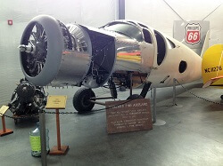

Fairchild Collection
Fairchild Aircraft List
1929 Fairchild KR-31 (Kreider-Reisner Challenger C-2)
1932 Fairchild 22-C7B

Donation: Terry Brandt
Engine: Menasco Pirate, 125 HP
The Fairchild 22 was built during the early 30's by the Fairchild Aircraft Company's Kreider-Reisner division. A successful trainer and sport plane, the 22 was sold with several engine choices. Both our 22’s have inverted inline engines but other engines, including radials, were offered in other models. The 22 was a lively performer and flying schools used them to teach pilots advanced maneuvers and piloting techniques. Production lasted from 1931 to 1935.
Additional Specifications:
Cruise: 106 MPH
Top Speed: 125 MPH
Empty Weight: 1010 lbs
Gross Weight: 1600 lbs
Wing Span: 31'10"
Length: 21'11"
Height: 8'
Service Ceiling: 18,000'
Climb in 1 Minute: 1050' at sea level
Approximate Number Built: 8
(Data pulled from Joseph Juptner's U.S. Civil Aircraft series.)
1933 Fairchild 22-C7A

Acquired with funds from Founding Memberships
Engine: Cirrus High Drive, 95 HP
The Fairchild 22 was built during the early 30's by the Fairchild Aircraft Company's Kreider-Reisner division. A successful trainer and sport plane, the 22 was sold with several engine choices. Both our 22’s have inverted inline engines but other engines, including radials, were offered in other models. The 22 was a lively performer and flying schools used them to teach pilots advanced maneuvers and piloting techniques. Production lasted from 1931 to 1935.
Additional Specifications:
Cruise: 94 MPH
Top Speed: 114 MPH
Empty Weight: 926 lbs
Gross Weight: 1550 lbs
Wing Span: 32'10"
Length: 21'8"
Height: 8'
Service Ceiling: 13,000'
Climb in 1 Minute: 750' at sea level
Approximate Number Built: 58
(Data pulled from Joseph Juptner's U.S. Civil Aircraft series.)
1937 Fairchild F-46
Donation: Hap Clarke
Engine: Pratt & Whitney R-985, 450 HP
This project is on display for all to enjoy and will be restored given enough funding and time. It is the first successful aircraft built with the molded plywood process named “Duramold” that was invented by Virginius E. Clark and jointly developed by Fairchild Aircraft and Haskelite Manufacturing. The F-46A is a low wing, cabin type airplane with seating for five. The fuselage is formed of Duramold and the wings use a conventional plywood-covered wood structure. In 1939 Howard Hughes bought the right to use the Duramold process to build his H-4 Hercules, the “Spruce Goose.” The F-46 was first fitted with a Ranger SGV-770 inverted, geared V-12 engine but in 1947 that was replaced with a Pratt Whitney R-985 and flew with the radial engine for another ten years.
1937 Fairchild 24G
Donation: North Cascades Vintage Aircraft Museum
Engine: Warner Super Scarab, 145 HP
A sturdily-built airplane, the Fairchild 24 adapted several automotive features including its brakes and roll-down windows. Initially built with just two seats, the third was added in 1933 and the fourth in 1938. One aviation writer described its cabin accommodations as “like flying your living room.” The early 24s were fitted with the Warner radial engine and over the production run several other engines were offered. Its structure is especially robust, using bigger than usual steel tubing. The UC-86 is the military version of the Fairchild 24R-40.
Additional Specifications:
Cruise: 118 MPH
Top Speed: 130 MPH
Empty Weight: 1475 lbs
Gross Weight: 2400 lbs
Wing Span: 36'4"
Length: 23'10"
Height: 7'4"
Service Ceiling: 16,500'
Climb in 1 Minute: 675' at sea level
Approximate Number Built: 100
(Data pulled from Joseph Juptner's U.S. Civil Aircraft series.)
1940 Fairchild UC-86
Acquired with funds from Founding Memberships.
Engine: Ranger 6-440, 175 HP
This is a military version of the Fairchild 24R40. A sturdily-built airplane, the 24 adapted several automotive features including its brakes and roll-down windows. Initially built with just two seats, the third was added in 1933 and the fourth in 1938. This airplane was one of nine Fairchild 24R40's impressed into service by the Army as the UC-86 at the onset of WWII. A total of 2,232 Model 24's were built.
Additional Specifications:
Cruise: 125 MPH
Top Speed: 140 MPH
Empty Weight: 1561 lbs
Gross Weight: 2550 lbs
Wing Span: 36'4"
Length: 24'10"
Height: 7'3"
Service Ceiling: 17,000'
Climb in 1 Minute: 800' at sea level
Approximate Number Built: 34
(Data pulled from Joseph Juptner's U.S. Civil Aircraft series.)
1943 Fairchild PT-19B

Donation: Sam & Alison Richardson
Engine: Ranger L-440, 200 HP
At the start of WWII most primary flight training in the Army Air Corps used biplanes. Given that the performance of combat aircraft was increasing, the Army evaluated trainers that would prepare pilot trainees for high performance fighters. The Fairchild M-62 with a Ranger 6-440 engine met this need and the Army ordered 270 designating them PT-19. It was superior to the biplane trainers in having flight characteristics (speed and wing loading) that resembled the combat aircraft the trainees would soon be flying. The Army then ordered 3,703 with increased power as PT-19A and then an additional 917 with added instruments and a hood over the front cockpit for instrument flight training as PT-19B.
Additional Specifications:
Cruise: 110 MPH
Top Speed: 132 MPH
Empty Weight: 1845 lbs
Gross Weight: 2545 lbs
Wing Span: 35'11"
Length: 27'8"
Height: 7'9"
Service Ceiling: 16,000'
Climb in 1 Minute: 760' at sea level
Approximate Number Built: 917